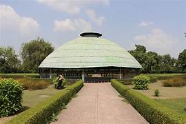
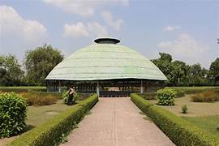

It was the capital city of the Vajjika League of Vrijji mahajanapada, considered one of the first examples of a republic that dates from c.6th century BCE. Gautama Buddha preached his last sermon before his mahaparinirvana in c.544 BCE, and Vaishali is also home to two important stupas directly related to the Buddha, the Relic Stupa of Vaishali, which is said to contain the ashes of the Buddha,[2][4] and the Stupa of Complete Victory that represents the prolongation of the Buddha's life by three months when he was eighty years old. Even before the advent of Buddhism and Jainism, Vaiśālī was the capital of the republican Licchavi state. In that period, Vaiśālī was an ancient metropolis and the capital city of the republic of the Vaiśālī state, which covered most of the Himalayan Gangetic region of present-day Bihar state, India. However, very little is known about the early history of Vaiśālī. The Vishnu Purana records 34 kings of Vaiśālī, the first being Nabhaga, who is believed to have abdicated his throne over a matter of human rights and believed to have declared: "I am now a free tiller of the soil, king over my acre." The last among the 34 was Sumati, who is considered a contemporary of Dasaratha, father of the Hindu god, Lord Rama.